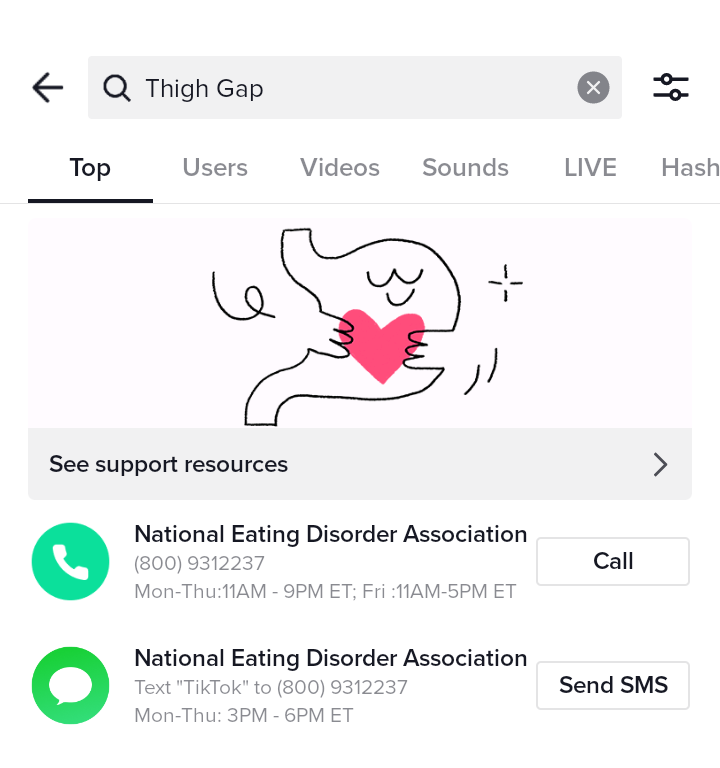
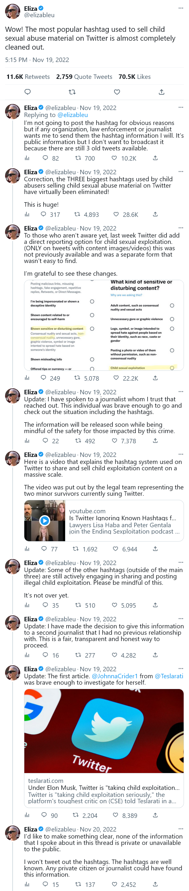
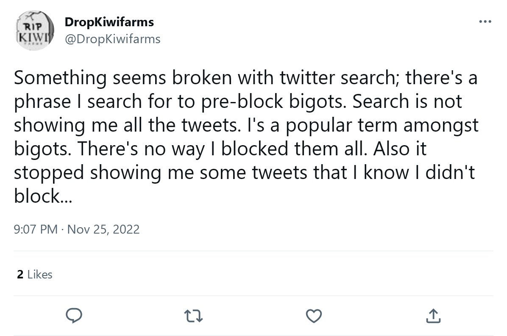
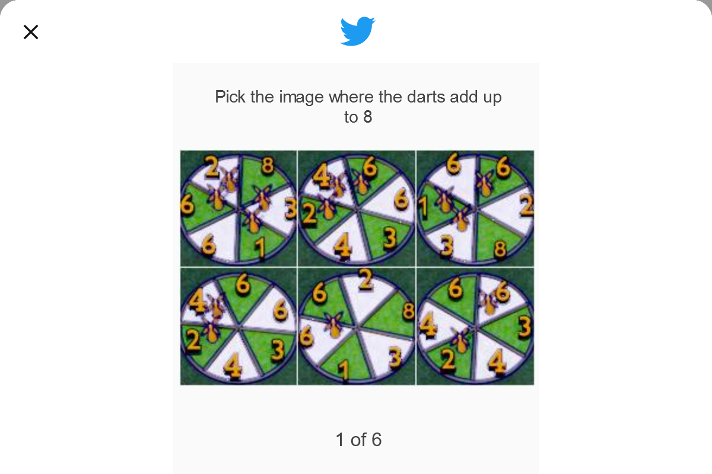
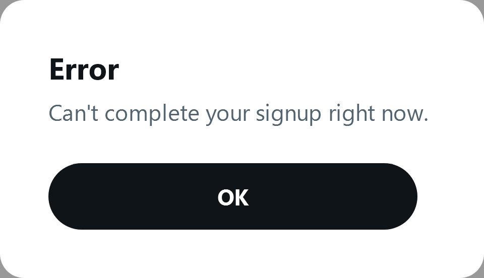

According to Craig Daniel Mansfield, if you click on the twitter hashtags #s2r, #megalinks, #megatrade, #dropboxlinks, it will take you to child porn.
https://archive.ph/tmDfZ#selection-1367.0-1381.30
I clicked on the #s2r. I saw a long wall of creepy tweets like "Go to www.mega.nz/file.zip" I scrolled down and suddenly BOOM I don't know what I saw but I knew it was bad. I immediately shut down my browser.
First off, I was doing deep research on Craig, trying to solve a crime, so I was clicking sh*t all over the place. Second, if I was on 4chan.org, I would not have clicked on it, but since I was on twitter.com, unfortunately, I let my guard down.
I trusted twitter to protect me.
I thought twitter was the safest website on Earth because it's controlled by "woke" college people. If you go on Tik-Tok and search "Thigh Gap" this is what you see. I thought twitter would do the same to protect me.

I was not brave enough to do deep research on this topic, but it looked to me like twitter had unrestricted child porn.
A few weeks later, I saw this Forbes article below, and the tweets by @elizableu, so I built the courage to click on the #s2r hashtag again, but only this time I noticed everything was 100% blocked!!! Elon Musk blocked the hashtag. Apparently, it's been a problem for many years. But Elon Musk fixed it in a few seconds!!! I can reasonably conclude that the previous owners of twitter are involved in some sort of pedophillic conspiracy.
Literally, on October 2022 the hashtag worked, and then on November 2022 it stopped working. Elon Musk owned twitter starting on October 26, 2022 1. Here is proof. So I created my pzdh7h kiwifarms on October 7, 2022 because that's the month I was doing deep research on Craig Daniel Mansfield.

Check out this tweet. Not only did twitter refuse to fix the problem... Twitter did not EVEN have a report button for it!!
https://twitter.com/elizableu/status/1594137408186073089
https://mobile.twitter.com/elonmusk/status/1601275244710621184
https://twitter.com/jordanbpeterson/status/1601994248370679808
Jack Dorsey said "this is false" with a lowercase T. Bitch, fuck you.
When Elon Musk took over, the first thing I noticed is, when I typed @craigbob99 in the search bar, I got ZERO results, aka shadow-banned. Eventually, craigbob99 received account suspension.

https://twitter.com/DropKiwifarms/status/1596370090353737729
Twitter search is not broken. Elon Musk fixed it.
I tried to make an anonymous twitter account. Elon Musk gave me a complex captcha!!! I passed the captcha, and it said "Failed". My only guess is Elon Musk blocked proton mail?!


I just can't believe this sh*t. Twitter 1.0 did not have a captcha, meaning it didn't protect me from bots.
I am finally ready to describe what I saw. It took me a long time to gain this courage. The only reason I am speaking up right now is because I know Elon Musk deleted it all. What else am I supposed to do? Am I supposed to stay silent?
It was a blonde girl, I estimate 9-12 years old, standing alone in a bedroom, smartphone, mirror selfie, shirt lifted up, nipples revealed, flat chest, everything else was fully clothed, she was smiling. It seemed like a photo a teenager might send to her boyfriend?
My whole entire life, I always thought child porn meant babies being raped. As it turns out, my theory is, the vast majority is the producers try to make it seem consensual. Like there is a whole industry (writers, actors, producers, directors). I just feel hurt, like I shouldn't know these things. And I always thought child porn only existed on the deep dark web. But as it turns out, all they do is go on twitter and type #s2r.
1 02:38:00 Dec 18, 2022 Episode 124 - Taylor the Middle Aged-Witch
Elon Musk exposed how Yoel Roth was in charge of Child Safety at twitter, and Yoel Roth wrote a Phd research paper basically saying "It's impossible to prevent children from signing up onto dating apps. They can easily lie. So we should create a special dating app designed only for children to date other children. This special dating app will be very strict compared to the grown up version, you know, to protect the kids." So basically he says children are going to have sex, so you might as well create a safe space for them to have sex. He says children are already using instagram, facebook, and twitter as dating apps, and he says that is very dangerous, because they are exposed to grown ups.
https://twitter.com/elonmusk/status/1601660414743687169
https://twitter.com/ratman720/status/834020652575289345
And do you remember around July 2022 twitter banned the word "Groomer". They said it's a "homophobic slur". Imagine a world where the word grooming doesn't exist anymore because twitter banned it.